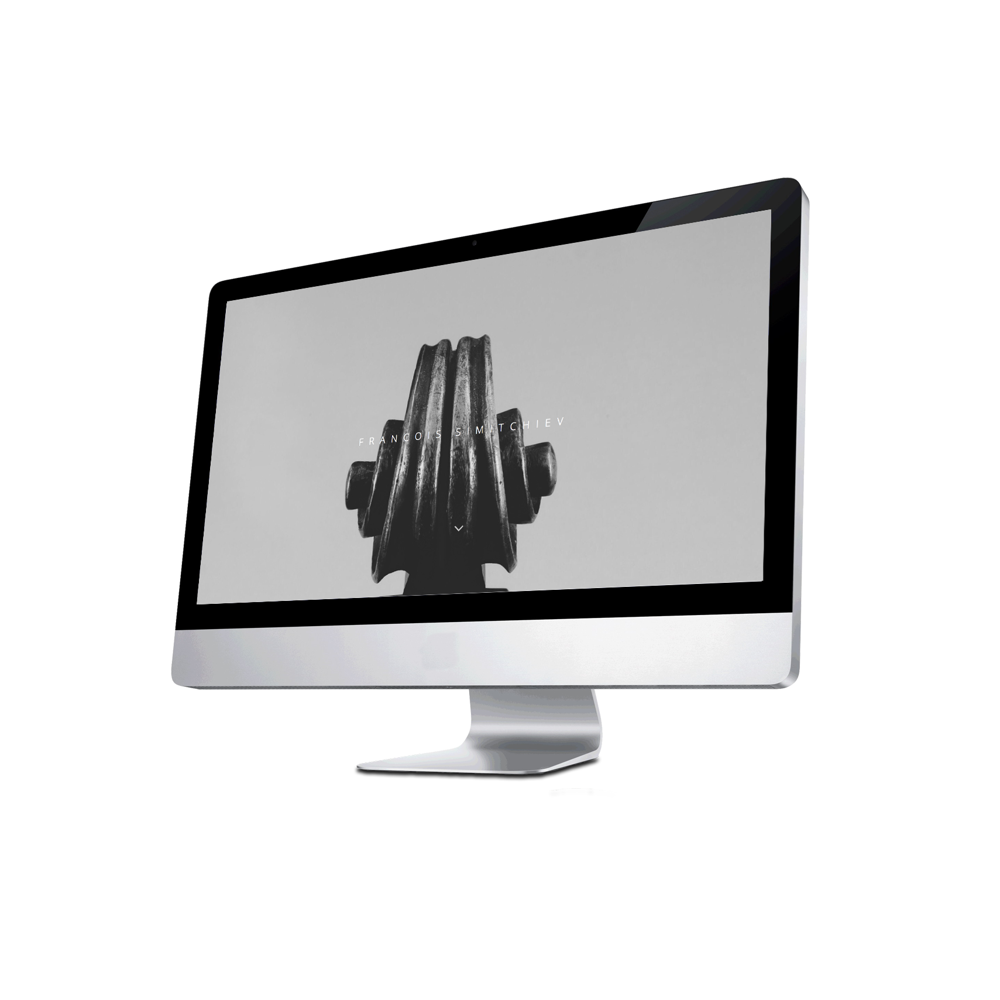

francois simitchiev
voir le site
Design + Développement front end / Back end + Responsive
Musicien et compositeur, François Simitchiev a fait appel à A+F pour la réalisation de son nouveau site web.
Nous avons conçu un site plein écran, mettant l'emphase sur le contenu graphique, et opté pour une navigation épurée et visible uniquement au clic / survol d'un simple icône, afin de garder la concentration de l'utilisateur sur le contenu du site. De subtiles animations accentuent l'immersion du visiteur.